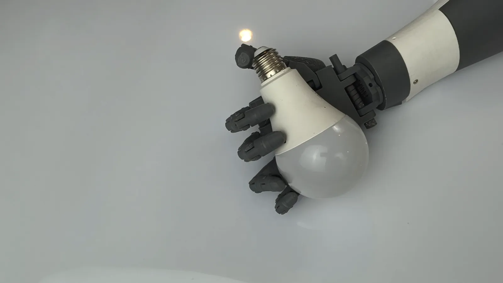
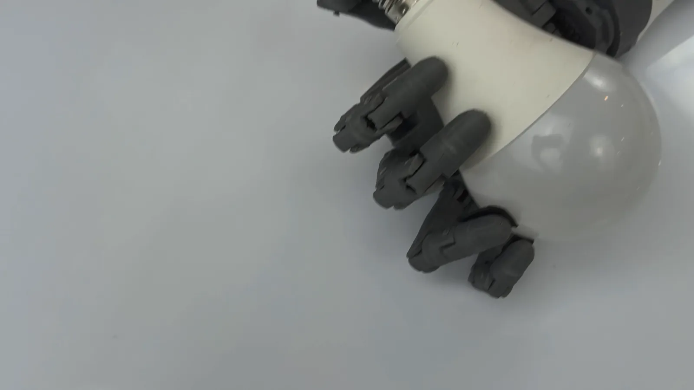
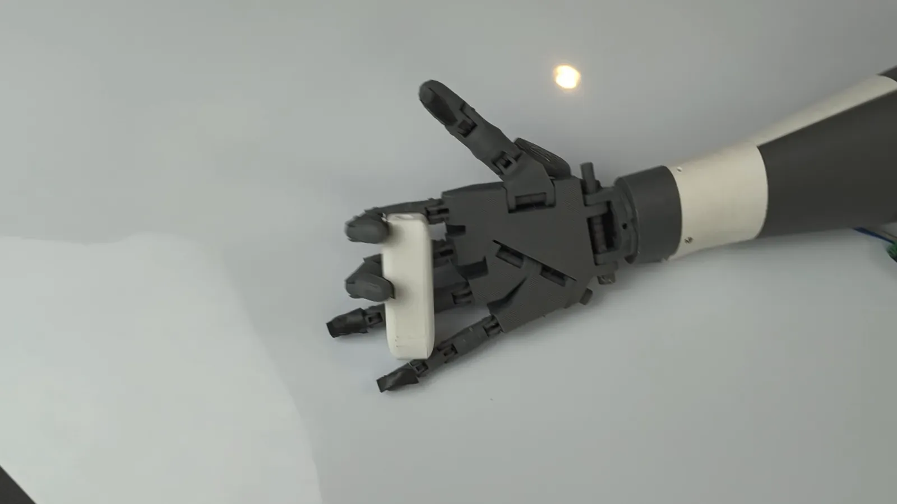
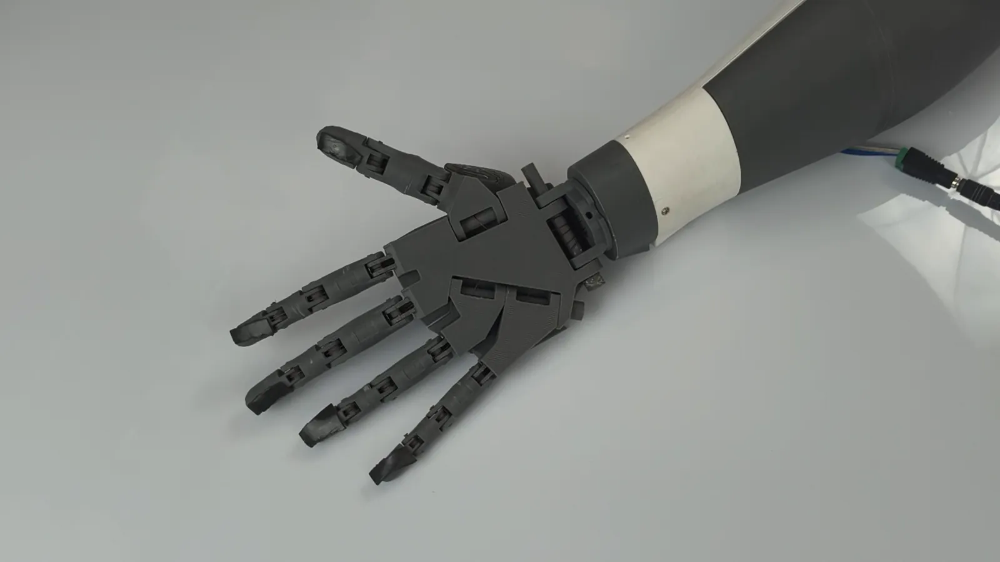
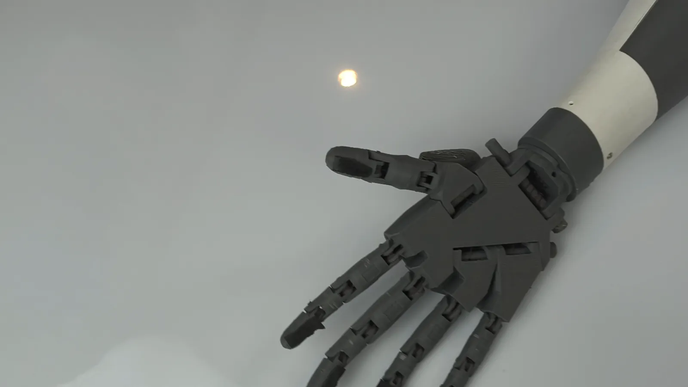

Lengan Bionik Modular Non-Invasif untuk Rehabilitasi Penyandang Amputasi di Indonesia
KRPS001Naurora Dewi AndriantoSMA Negeri 1 Surakarta

SVG:wave
4 kanal sEMG
kendali dari niat gerak
SVG:pulse
Umpan balik haptik
pengguna merasakan genggaman
SVG:grip
8 pola
cengkeram
Pembuka
Setiap gerakan memiliki arti.
Bagi kita sederhana. Bagi penyandang amputasi, gerakan-gerakan kecil ini menentukan kemandirian sehari-hari.

01 Menggenggam

02 Mengangkat

03 Menjangkau
ASTA · HRIE 202602
Latar belakang
Teknologi asistif belum terjangkau oleh semua yang membutuhkannya.
SVG:coin
Biaya
Lengan prostetik fungsional masih mahal sehingga sulit dimiliki.
SVG:road
Akses layanan
Kontrol dan latihan menuntut perjalanan berulang ke pusat rehabilitasi.
SVG:people
Kebutuhan berbeda
Kondisi tungkai, kekuatan otot, dan tujuan rehabilitasi tiap orang tidak sama.
SVG:check
Dibutuhkan teknologi asistif yang menyesuaikan penggunanya — dan terhubung dengan rehabilitasi.
ASTA · HRIE 202603

Solusi
Inilah ASTA.
Lengan bionik modular non-invasif untuk mendukung aktivitas fungsional dan proses rehabilitasi.
SVG:cube
FOKUS 01
Sistem modular yang dapat disesuaikan
SVG:wave
FOKUS 02
Kontrol berbasis intent (niat gerak)
SVG:pulse
FOKUS 03
Umpan balik sensorik ke pengguna
SVG:chart
FOKUS 04
Pemantauan aktivitas rehabilitasi
ASTA · HRIE 202604
Novelty · Kebaruan
Empat kemampuan dalam satu sistem.
Prostesis kosmetik
Body-powered
Mioelektrik umum
ASTA
penuhsebagiantidak adaPerbandingan kualitatif karakteristik umum tiap kategori.
ASTA · HRIE 202605
Rancangan · LibreCAD
Enam modul, dapat dilepas & dicetak ulang.
① Jari ② Telapak ③ Pergelangan
④ Lengan bawah ⑤ Socket ⑥ Sendi siku
Socket disesuaikan dengan tungkai pengguna
Cetak 3D PETG / PLA
Modul rusak diganti, bukan seluruh alat
ASTA · HRIE 202606
Arsitektur sistem
Lima sistem yang saling terhubung.
━ jalur perintah gerak━ jalur umpan balik━ jalur data
ASTA · HRIE 202607
Cara kerja
Enam langkah, dari socket sampai dasbor.
MenggenggamMengangkatBuka–tutup
Video purwarupa ASTA · rekaman tim
ASTA · HRIE 202608
Milestone · Tahapan pengembangan
User-Centered Design + Agile Development.
SVG:loop
Konsultasi kebutuhan dengan penyandang amputasi, fisioterapis, serta prostetis & ortotis — hasil evaluasi kembali menjadi masukan iterasi berikutnya.
ASTA · HRIE 202609
Usability · Kebermanfaatan
Diuji dengan System Usability Scale.
SVG:checkbig
Layak dipakai
Hasil uji System Usability Scale (SUS)
SVG:user
Bagi pengguna
Mendukung aktivitas fungsional sekaligus menunjang rehabilitasi. Sistem yang disesuaikan dan merespons input pengguna memberi pengalaman lebih adaptif.
SVG:steth
Bagi rehabilitator
Data aktivitas pengguna menjadi informasi tambahan untuk memantau perkembangan latihan dan mengevaluasi proses rehabilitasi.
ASTA · HRIE 202610
Aplikasi & dasbor
Latihan di rumah, terpantau dari klinik.
asta-id.web.app · Dasbor Klinis
Sesi Latihan · hitung repetisi
Pengguna · latihan terpandu & hitung repetisiRehabilitator · kepatuhan & perkembangan · data demo
Hilirisasi · Potensi pengembangan
Tumbuh bersama ekosistem rehabilitasi.
MODEL PENYEBARAN
SVG:cube
Produksi & perbaikan lokal
Modul cetak 3D dibuat dan diganti di daerah.
SVG:tool
Socket oleh prostetis setempat
Penyesuaian mengikuti tungkai tiap pengguna.
SVG:phone
Telerehabilitasi
Latihan di rumah terpantau layanan rehabilitasi.
ASTA · HRIE 202612
Rencana pengembangan lanjutan
Dari purwarupa menuju pengguna.
ASTA · HRIE 202613
Tim
Enam pelajar, satu tujuan.
SMA Negeri 1 Surakarta
ASTA · HRIE 202614
Move with Purpose.
ASTA hadir bukan sekadar menggantikan gerakan, tetapi membantu penggunanya kembali berinteraksi dengan dunia di sekitarnya.